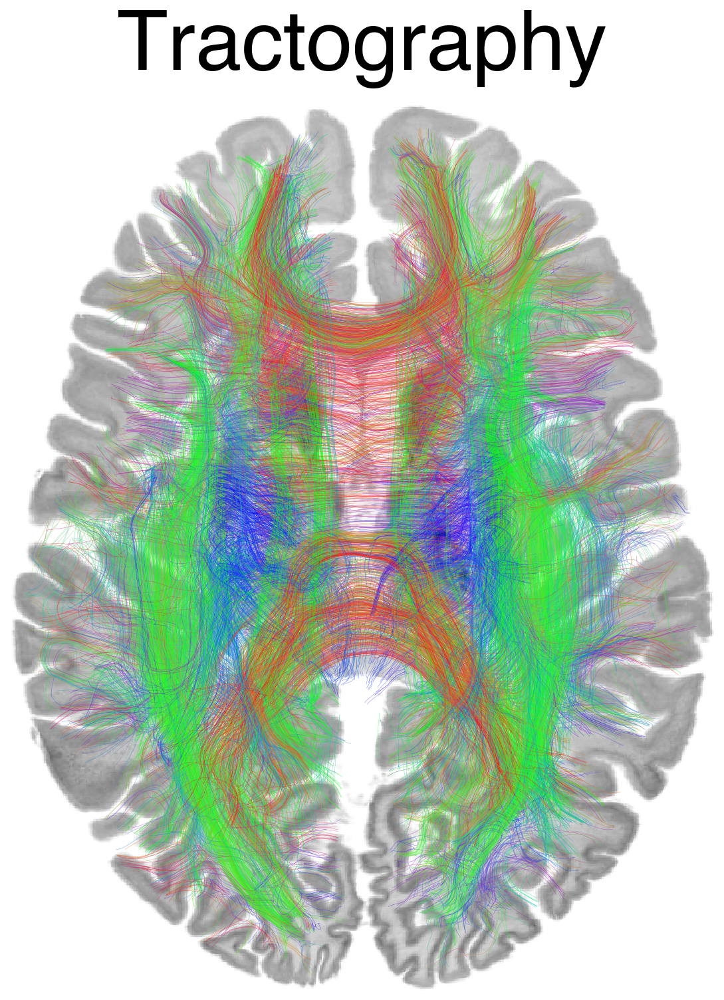
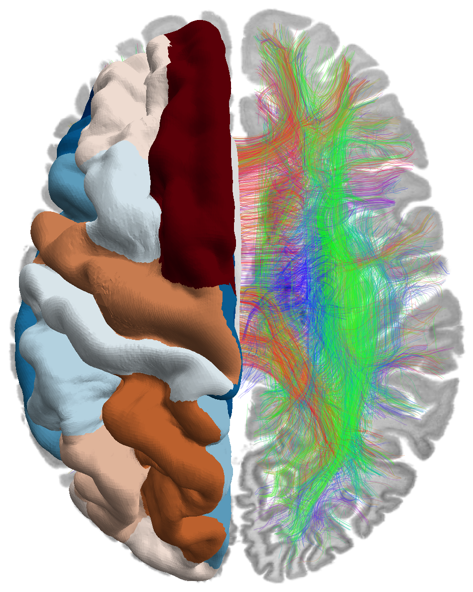
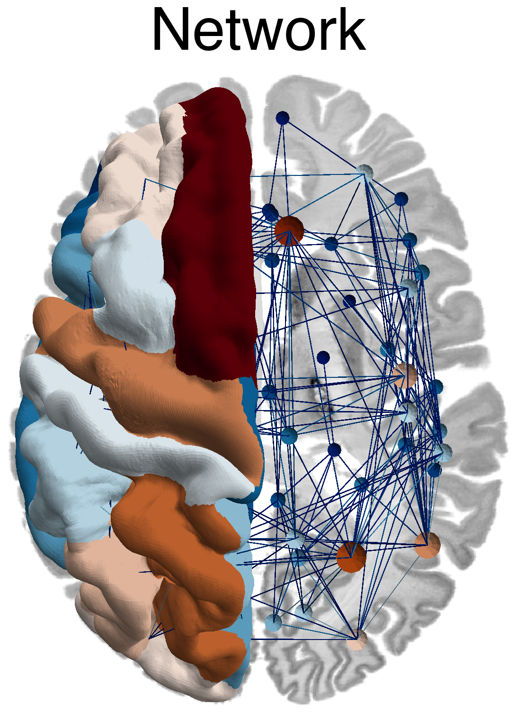
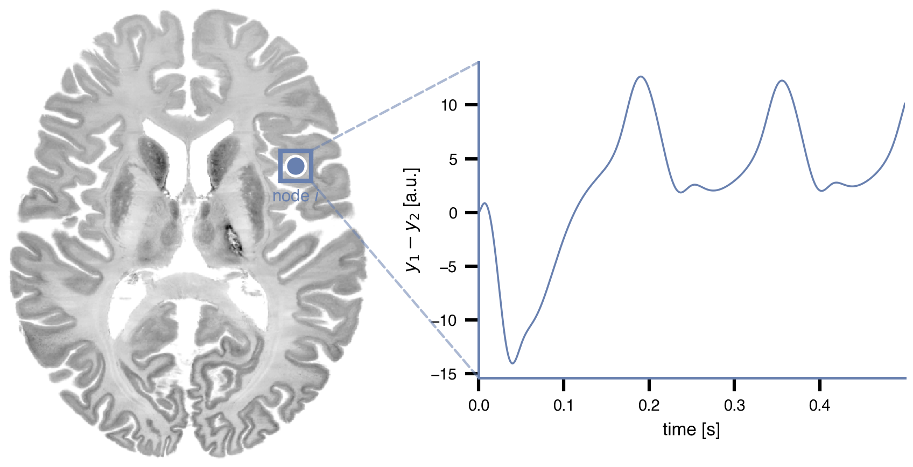
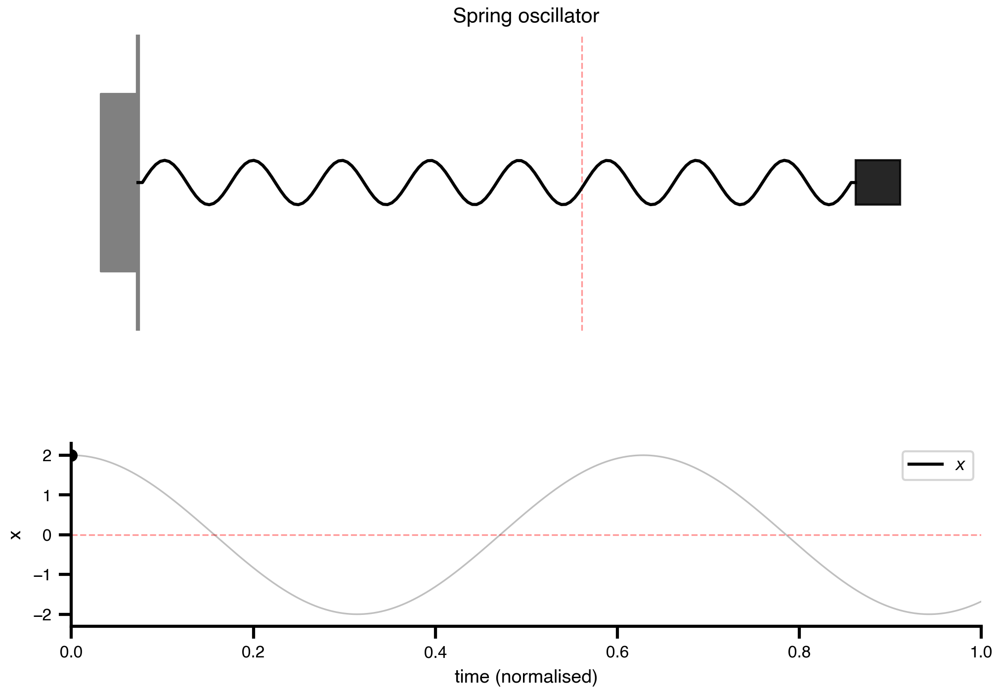
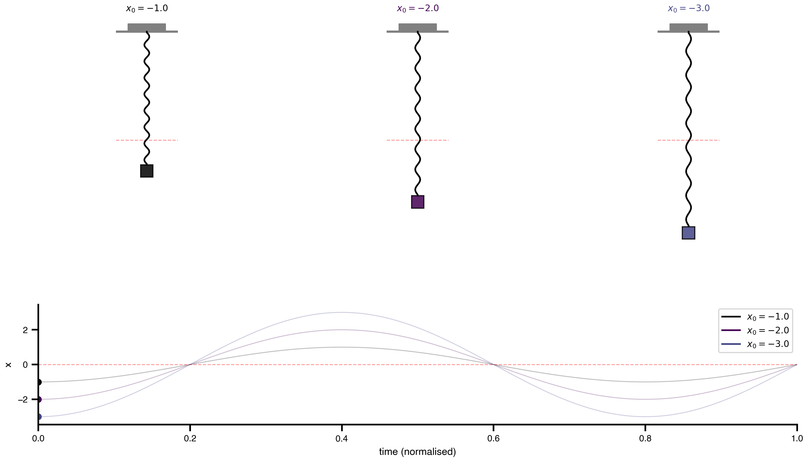
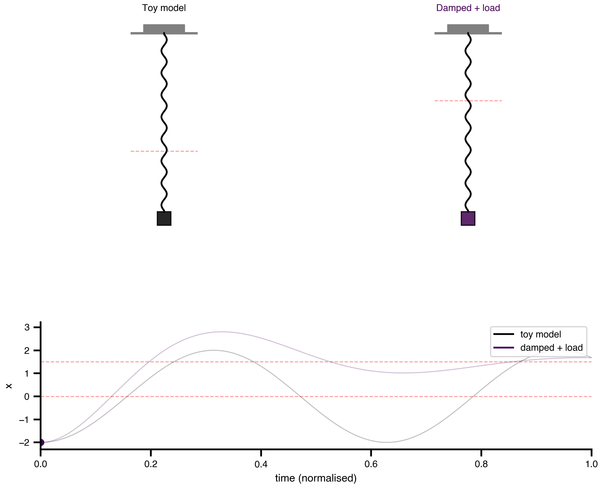
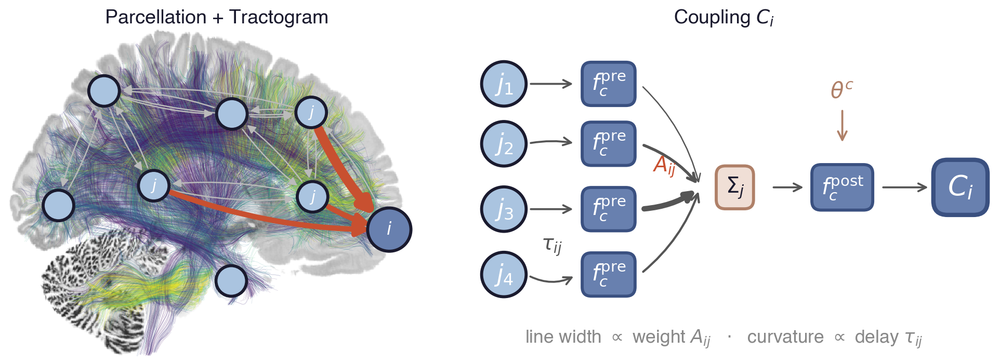
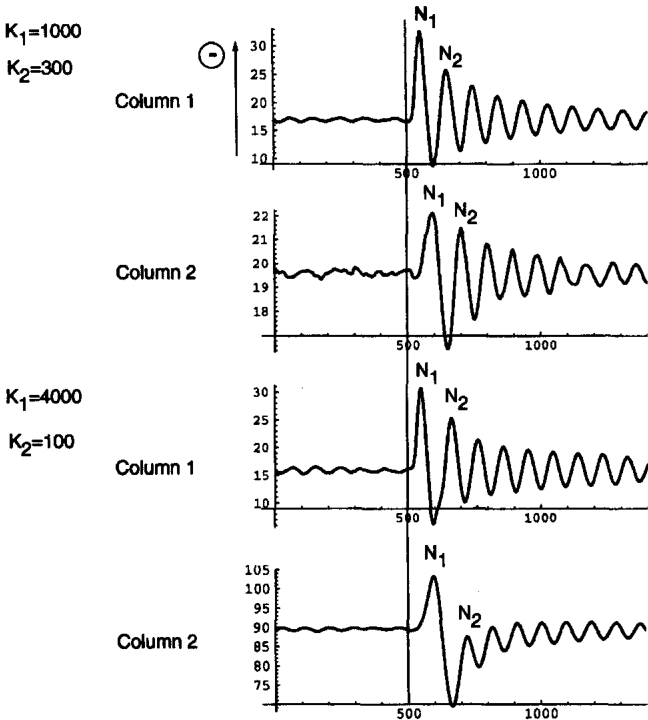

Towards translational and mechanistic whole-brain simulations with The Virtual Brain
Track 4 Workshop — FAIR Brain Data Science Bootcamp
May 12, 2026
Basic ideas and history





Dynamical Systems
A mass \(m\) on a spring with stiffness \(k\).
Perpetual oscillation at \(\omega = \sqrt{k/m}\).
State Equations: \[ \dot{x} = v \] \[ \dot{v} = - \frac{k}{m}*x \]
State Variables
| Variable | Initial Value | Unit | Description |
|---|---|---|---|
| \(x\) | 2.0 | \(\mathrm{m}\) | Displacement from equilibrium |
| \(v\) | 0.0 | \(\frac{\mathrm{m}}{\mathrm{s}}\) | Velocity |
Parameters
| Parameter | Value | Unit | Description |
|---|---|---|---|
| \(k\) | 0.0001 | \(\frac{\mathrm{N}}{\mathrm{m}}\) | Spring stiffness constant |
| \(m\) | 1.0 | \(\mathrm{kg}\) | Mass of the oscillating body |


Initial Conditions
\[ \dot{x} = v \] \[ \dot{v} = - \frac{k}{m}*x \]


Phase Space

Parameters — Mass


Towards Realism — Damping & Load


Coupled system

Coupled Brain Network

\[ C_i = f_c^{\text{post}}\Big(\sum_j A_{ij}\, f_c^{\text{pre}}(S_i, S_j(t-\tau_{ij}), \theta^c), S_i, \theta^c\Big) \]
Coupling
- \(f_c^{\text{pre}}\) - pre-aggregation transformation
- \(A_{ij}\) - structural connectivity weight (\(j \to i\))
- \(\tau_{ij}\) - transmission delay (tract length / conduction speed)
- \(f_c^{\text{post}}\) - post-aggregation transformation
- \(\theta^c\) - coupling parameters

Why FAIR? TVB-O in one slide

2D portraits

Same local rule: arrows define the flow; trajectories reveal attraction, repulsion, rotation and separatrices.
Hopf: birth of an oscillation
\[ \dot z = (a + i\omega)z - |z|^2z, \qquad r_{\mathrm{cycle}} = \sqrt a \]

fixed point loses stability \(\Rightarrow\) stable oscillation appears
Visual evoked potentials
Original

Specification
- id: 6
label: "VEP: different columns, with delay
(Fig. 11)"
dynamics:
name: JansenRit1995_Delayed_VEP
parameters:
A: {value: 3.25, unit: mV}
B: {value: 22, unit: mV}
C: {value: 135}
a: {value: 100, unit: s^-1}
b: {value: 50, unit: s^-1}
v0: {value: 6, unit: mV}
e0: {value: 2.5, unit: s^-1}
r: {value: 0.56, unit: mV^-1}
p:
value: 220
unit: s^-1
shape: "(n_nodes,)"
distribution: *dist_p_uniform
a_d: {value: 30, unit: s^-1}
K: {value: 0, shape: "(n_nodes,)"}
derived_parameters: *jr_derived
functions: *jr_functions
coupling_terms: *jr_coupling
state_variables:
y0: {equation: {rhs: y3}}
y3:
equation:
rhs: >-
A*a*Sigm(y1 - y2)
- 2*a*y3 - a**2*y0
y1: {equation: {rhs: y4}}
y4:
equation:
rhs: >-
A*a*(p + P
+ C2*Sigm(C1*y0) + z0)
- 2*a*y4 - a**2*y1
y2: {equation: {rhs: y5}}
y5:
equation:
rhs: >-
B*b*(C4*Sigm(C3*y0))
- 2*b*y5 - b**2*y2
z0: {equation: {rhs: z1}}
z1:
equation:
rhs: >-
A*a_d*K*c_intercolumn
- 2*a_d*z1 - a_d**2*z0
derived_variables:
v_pyr: {equation: {rhs: y1 - y2}}
output: [v_pyr]
network:
number_of_regions: 2
number_of_nodes: 2
conduction_speed: {value: 0}
nodes:
- {id: 0}
- id: 1
parameters:
B: {value: 17.6}
C: {value: 108}
edges:
- source: 0
target: 1
directed: true
- source: 1
target: 0
directed: true
coupling: *sigmoidal_coupling
events: *flash_events
integration: *integration_vep
execution:
random_seed: 42
explorations:
VEP_delayed_fig11:
mode: zip
n_trials: 40
average: trials
parameters:
K:
element_domains:
- element: 0
explored_values: [300, 100]
- element: 1
explored_values: [1000, 4000]Reproduced

Thanks & contact

Contact
 |
 |
 |
|---|